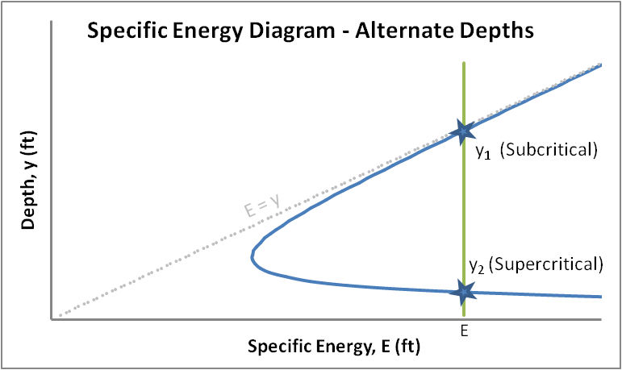
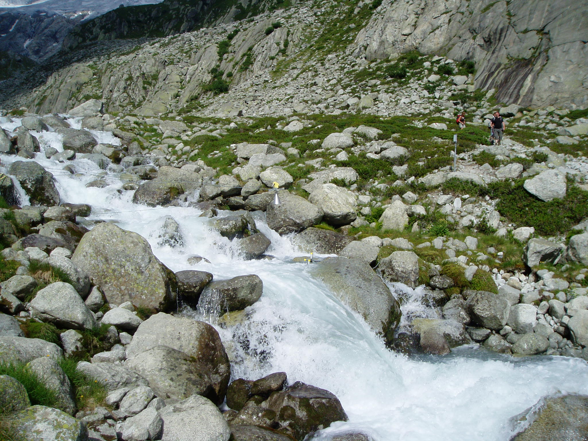

Transition from subcritical to supercritical

Back to course overview
With Bernouilli’s Law, we defined the total hydraulic head:
\[H = z+{\frac {p}{\rho g}}+{\frac {v^{2}}{2g}}\]
where \(v\) the mean flow velocity.
In rivers, there is no pressure term and \(z=h+z_b\) is the sum of the water depth \(h\) and the elevation of the stream bed \(z_b\). So we can define the specific energy:
\(E = h+{\frac {v^{2}}{2g}}\)
\(E+z_b=H\)

Solving \(dE/dh=0\) yields a condition for which there is only 1 possible water depth for a given specific energy: \(h_0=v_0^2/g\). This is the condition for critical flow
The Froude number is defined as:
\(Fr=\frac{v_{0}}{\sqrt{g*h_{0}}}\)
If \(F=1\), the flow is critical and \(h=2*E/3\)
If \(F<1\), the flow is subcritical
If \(F>1\), the flow is supercritical


From the previous equations can be derived a general formulation for discharge \(Q\) over weirs:
\(Q = C L H^n\)
\(C\) is the flow coefficent for the structure. \(C= \sqrt { \frac{8g}{27}}\) for a horizontal weir.
\(L\) is the width of the weir at its crest
\(H\) is the height of water over the crest (where the flow is critical)
\(n\) varies with structure (e.g., 3/2 for horizontal weir, 5/2 for v-notch weir…)
Using the friction factor, the Chézy formula can be derived as:
\[v=C{\sqrt {R_h\,S}}\]
\(v\) is the mean velocity (m/s),
\(C\) is the Chézy coefficient in \(m^{1/2}/s\),
\(R_h\) is the hydraulic radius in m: cross-sectional area / wetted perimeter (~ water depth for wide rivers)
\(S\) is the slope of the river bed (unitless).
Theoretically, the Chézy coefficient \(C\) can be expressed as a function of the friction factor:
\(C= \sqrt { \frac{8g}{f}}\)
As it depends on both the hydraulic radius \(R_h\) and the channel roughness, this empirical formula was proposed:
\(C = \frac {1}{n}R_h^{1/6}\)
where \(R_h\) is the hydraulic radius and \(n\) is Manning’s roughness coefficient.
Replacing the last expression for \(C\) into Chézy’s equation yields:
\[v = {\frac{R_h^{2/3} S^{1/2}}{n}} \]
\(v\) is the cross-sectional average velocity
\(n\) is the Manning coefficient. (in \(s*m^{-\frac {1}{3}}\))
\(R_h\) is the hydraulic radius in meters
\(S\) is the gradient in hydraulic head, which is the channel bed slope when the water depth is constant
According to “Elements of physical hydrology”
| Channel material | Manning’s n |
|---|---|
| Glass | 0.01 |
| Smooth concrete | 0.012 |
| Earth canal | 0.02 |
| Natural streams | 0.024-0.075 |
Useful to forecast the attenuation of a flood wave through a stream channel, assess the impact of mitigation measures, a dam failure…
At a specific location, slope is constant so discharge can be expressed as a function of water height, typically a power law:
\(Q=a*H^b\)
where \(a\) and \(b\) are constants and \(H\) is the river stage
This relationship need to be calibrated for a variety of flows and needs regular re-calibration in erosive environments
More details: WMO - Manual on stream gauging


Elements of physical hydrology: Chapters 4, 5
Hydrology in Practice: Chapters 6, 16
Vassdragshåndboka: Chapters 4, 10
USDA - National Engineering Handbook Section 5 Hydraulics
Discharge measurement at gauging stations
Hydraulics course with a lot more detail: Isaac Wait online lectures